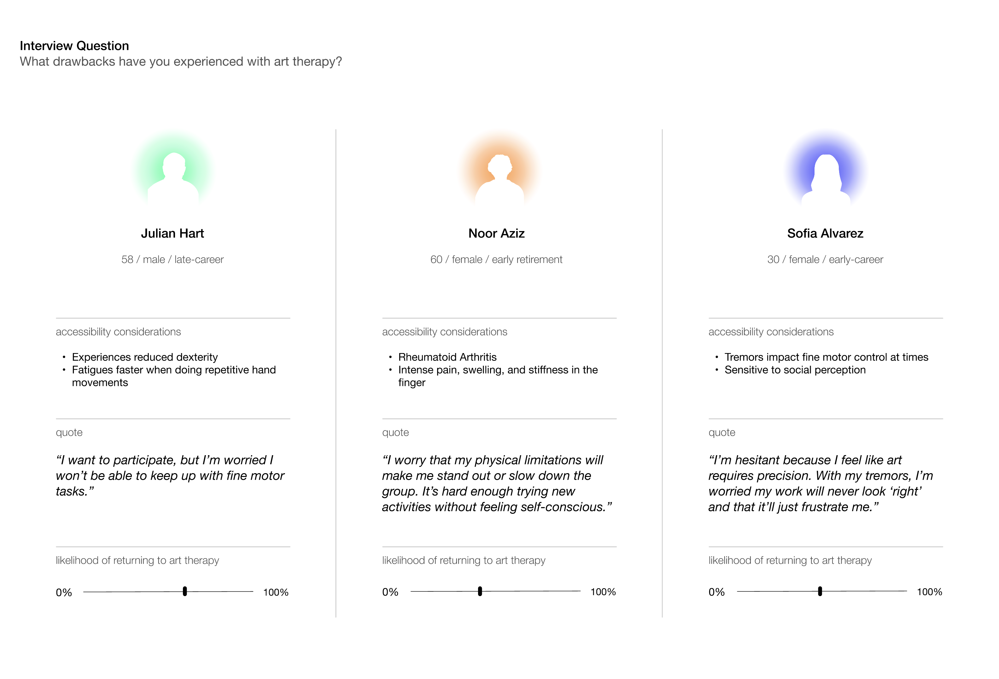
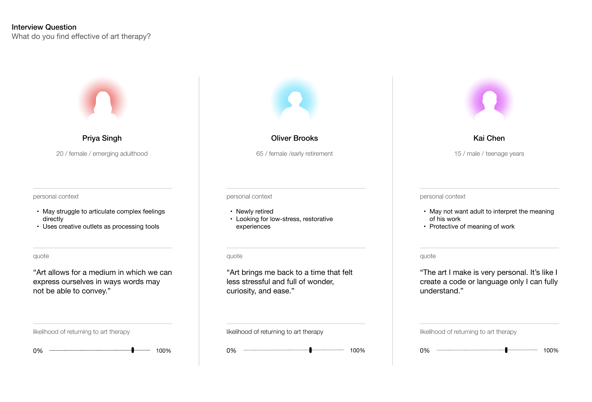

KAITLYN J. KIM
Industrial Design + Sustainability Studies @ the Rhode Island School of Design
Previously @ HyundaixRISD ↗
Open + Happy to Work
FALL 2024 • TOOLS FOR ART THERAPY
SCULPIE
OVERVIEW
PROBLEM
Traditional art therapy tools depend heavily on fine motor control, grip strength, and sustained dexterity. For individuals with motor-compromised limitations, this creates physical barriers to participation. When the act of creating becomes frustrating or inaccessible, emotional and creative expression is restricted, limiting the therapeutic benefit of an art therapy session.
"How might we… make art therapy more approachable for adults and accessible for motor compromised individuals?"
SOLUTION
Sculpie reimagines art therapy tools and creative expression through modular, magnetically connected sculptural symbols that prioritize sensory engagement over fine motor precision. With each symbol varying in color, weight, and texture, Sculpie allows clients to construct and externalize complex emotions through intuitive assembly. The embedded magnets provide grounding tactile feedback, transforming the act of expression into an accessible, satisfying, and inclusive experience.

Multi-Sensory Components
Each piece varies in weight, texture, and color, offering diverse sensory pathways for expressing emotions without relying on fine motor precision.

Adaptive Removable Base
An interchangeable base adjusts weight and can hold objects inside, supporting personalization and deeper emotional exploration.

Magnetic Connections
Embedded magnets allow for easy, secure assembly, reducing the need for grip strength while providing satisfying tactile feedback.

Open-Ended Play
Modular, customizable elements encourage free expression, autonomy, and ownership over emotional storytelling.
OUTCOME
By prioritizing sensory engagement over fine motor precision, Sculpie creates a more inclusive and playful art therapy experience for clients with motor-compromised abilities. The Sculpie toolkit was implemented in art therapy practices at SMJ Wellness, a behavioral health and workplace wellness corporation located in Whittier, California.
RESEARCH
RESEARCH STUDY 1 - USER INTERVIEWS
My first step was to understand my users and audience. What aspects of art therapy do people find inaccessible or are skeptical about? What do they appreciate about it? Among individuals interviewed were those with limited hand dexterity, essential tremors, and stroke survivors.


RESEARCH STUDY 2 - USER SURVERY
I conducted a survey with 40 individuals ranging in age from 10 to 65 years old. In the survey, I asked participants which colors, textures, memories, and foods they associated with the emotions of comfort, fear, frustration, and isolation. Data collected from the survey was then compiled and organized and visualized, where I drew connections between similar ideas and tallied the most common responses.

RESEARCH STUDY 3 - EXPERT INTERVIEW
Consulting an art therapist was incredibly valuable to my design process, as it gave me deeper insight into Mrs. Jenkins's practice and the broader field of art therapy. Below are examples from one of her clients' sand-tray therapy sessions. Mrs. Jenkins maintains an extensive collection of symbolic objects and two sand trays—one dry and one wet—where clients are encouraged to "play" and organize their thoughts and emotions through tactile expression as opposed to utilizing traditional art mediums.

RESEARCH FINDINGS
My research gave me an intensive understanding of the needs of my users, from what they feared to what they enjoyed about art therapy. From my user interviews, there seemed to be a concern regarding skill when starting art therapy. I wanted Sculpie to feel intuitive, non-threatening, and approachable so that regardless of skill level or age anyone would feel welcome to engage in creative expression. Research proved to be an essential step in informing my design decisions. For example, the colors identified through my user survey directly influenced the color palette and textures of the final symbols. From my expert interview with Mrs. Jenkins, I learned that symbols help people feel safe when expressing their emotions and serve as a non-direct form of communication—a goal I ultimately aimed to achieve with the Sculpie kit.
PROTOTYPE
CAD MODELING + 3D PRINTING
All mid-fidelity and high-fidelity prototyping and modeling was done using CAD modeling (Fusion 360) and 3D printed (FDM Extrusion). The mid-fidelity models I printed were extremely helpful as it allowed me to get a sense of the size, weight, and feel of the objects.
FABRICATE
CMF (COLOR, MATERIAL, FINISH)
Each 3D-printed component was sanded, finished, and coated with a colored pigment. Insights from my initial user research, specifically on how different colors evoke certain emotion, strongly informed the final color and finish choices of each piece. I first started the process with sketches and experimenting with different color schemes to get my initial ideas going.
REFLECTION
PERSONAL THOUGHTS
Sculpie was a deeply rewarding process. Through this project, I realized my desire as a designer to create products and experiences that resonate with people on an emotional level. It opened the door to my interest in art therapy and helped me understand the powerful impact that making and play can have on one's mental health. Grounded in research, my approach allowed me to develop a thoughtful, well-informed product for the art therapy space.